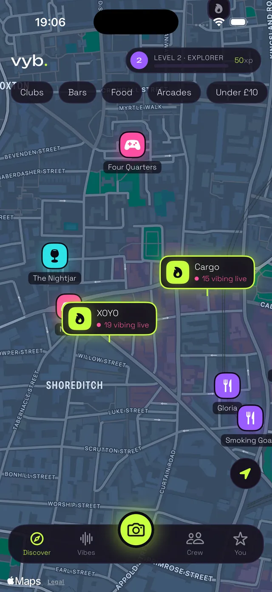
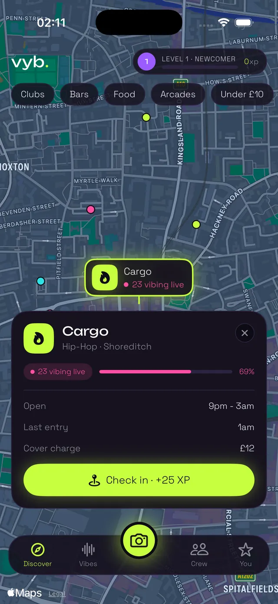
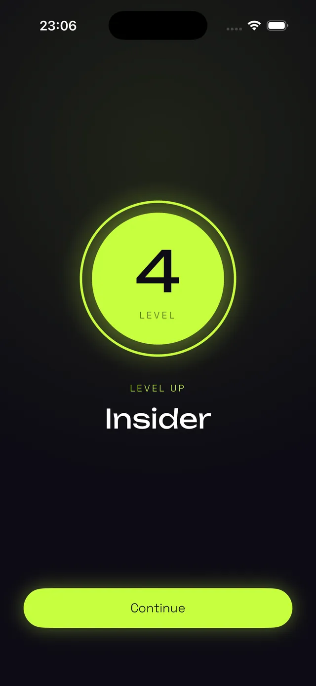

See what’s around.
Move around the map to discover somewhere nearby or explore a different part of London.
London, meet your next plan.
The group chat needs a plan. Find clubs, bars, food, arcades and viewpoints around London, all on one map.
Free to download 18+ iOS 26.5 or later

Less deciding. More doing.
Move around the map to discover somewhere nearby or explore a different part of London.
Choose a category and narrow things down by your mood and budget.
Check the venue details, choose your next stop and make an evening of it.

DEMO SCREENA little less guesswork
Open a venue to see what it’s known for, with opening hours and pricing where available. Find somewhere that fits the kind of night you want.
Details can change. Check with the venue before travelling or booking. Prices and crowd numbers in this preview are illustrative.
Explore London on Vyb
DEMO SCREENMake it a game
Check in when you arrive, earn XP and complete quests as you explore. Give yourself a reason to try somewhere new.
You can explore without signing in. An optional account lets you keep your progress across devices.
Start exploringBefore you head out
Yes. Vyb launched on 16 October 2026 and is available on the App Store. It is free to download for iPhone, requires iOS 26.5 or later, and is for people aged 18 and over.
You can explore Vyb without signing in. An optional Sign in with Apple account lets you keep your progress across devices and reinstalls.
We’re starting with London. Coverage is growing and some areas have more venues than others. If your favourite place is missing, send us a venue suggestion.
Vyb is currently available for iPhone. You can follow @join.vyb on TikTok for updates.
Email hello@vybhq.com with the venue name or what happened. Include the area and your app version if you can. Your feedback helps decide what we improve next.
Now live in London
Pick a place. Message your mates. Go find your Vyb.
Available now for iPhoneDownload on the App StoreFree to download · 18+ · iOS 26.5 or later
Independent. London based.
Vyb is built by Vyb Social Ltd, an independent company based in London. We’re improving the app with feedback from the people using it.
Questions, press or venues? Say hello.